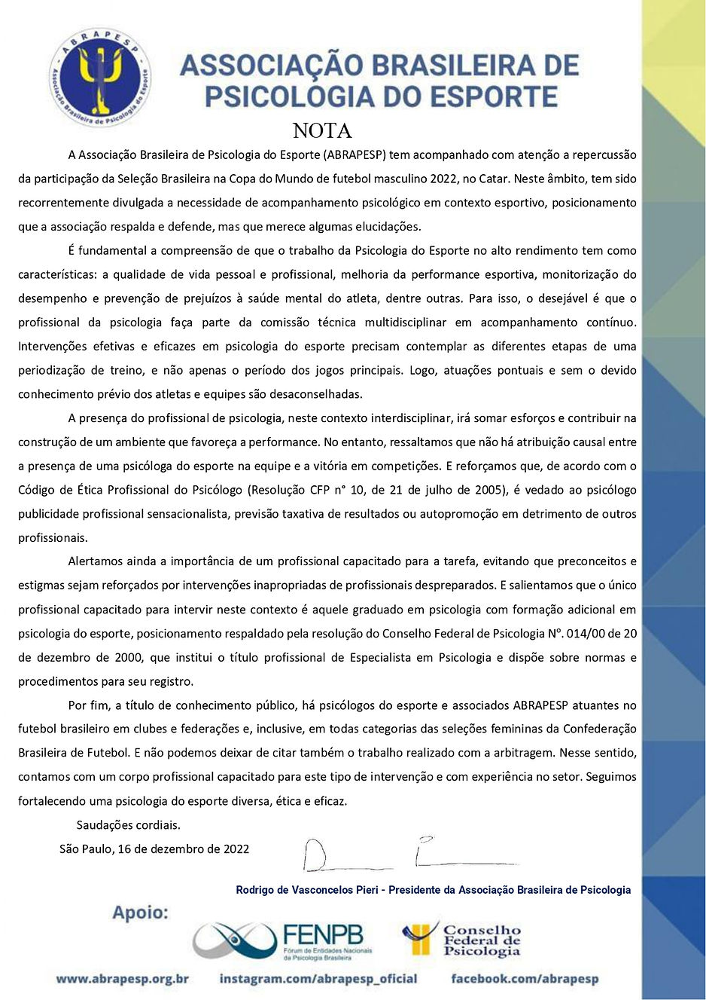
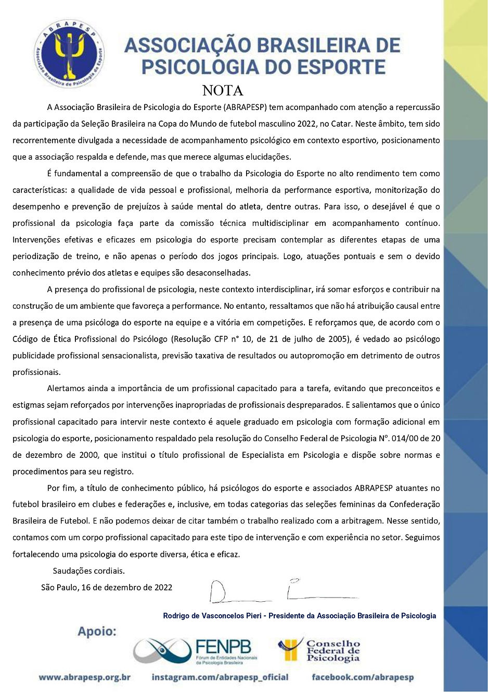

Atenta ao debate do momento referente à Psicologia do Esporte na Copa do Mundo do Catar, ABRAPESP lança nota elucidativa, com apoio das Entidades que compõem o Fórum de Entidades Nacionais da Psicologia Brasileira – FENPB e do próprio Conselho Federal de Psicologia – CFP.
